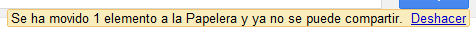
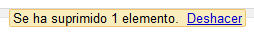
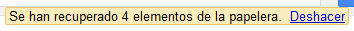
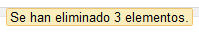

Veamos los pasos a seguir para eliminar archivos de nuestro Drive.
- Eliminar
- Compartido
- Papelera
- - Restaurar
- - Eliminar de la papelera
- - Vaciar papelera
Para eliminar uno o varios archivos existen varias alternativas. La más sencilla es seleccionarlos y hacer clic en el botón "Suprimir" ubicado en la parte superior.
Otra forma de eliminarlos es pulsando el botón derecho del ratón y luego seleccionar la opción "eliminar" del menú que se despliega. El mismo menú lo encontraremos desde el botón "Más".
Cuando eliminamos un archivo, veremos un mensaje en la parte superior de la pantalla que indica que se ha movido a la Papelera. Aquí encontramos también la opción para deshacer la eliminación.
Si eliminamos un archivo del cual somos propietarios, pero está siendo compartido con otras personas, éste se moverá a la papelera y dejará de estar compartido. Si restauramos este archivo desde la papelera, volverá a compartirse con quienes tenían acceso.

En el caso de eliminar un archivo que han compartido con nosotros y por tanto "no somos propietarios", dejaremos de tener acceso al archivo y no podremos restaurarlo ya que "no se moverá a la Papelera". Para volver a tener acceso, el propietario deberá compartirlo nuevamente con nosotros.

Desde la Papelera, podremos recuperar los archivos que hemos eliminado previamente.
Para acceder a la Papelera, debemos hacer clic sobre el enlace "Más" del menú de la izquierda y seleccionar la opción "Papelera" de las opciones que se despliegan.

Hecho esto, accederemos a la papelera donde encontraremos el listado de archivos que habíamos eliminado. Desde aquí podremos recuperarlos para volver a trabajar sobre ellos, o bien, eliminarlos definitivamente.
En la Papelera, encontraremos todos los documentos que hemos eliminado. Aquí se almacenan en lugar de eliminarse definitivamente. Gracias a esto podríamos recuperar un archivo que habíamos eliminado.
Para "Restaurar" uno o varios archivos desde la papelera, debemos seleccionar aquellos archivos que deseamos restaurar. Al seleccionarlos, en la parte superior aparecen una serie de botones, debemos pulsar la opción "Restaurar".
Una vez pulsado, aparecerá un mensaje en la parte superior confirmando que se han recuperado los archivos. Podemos deshacer la restauración pulsando sobre el enlace "Deshacer" del mensaje.

Los archivos recuperados, volverán a las carpetas donde los teníamos alojados originalmente antes de su eliminación.
Puede que necesitemos eliminar de forma definitiva algunos documentos de la Papelera, pero no todos a la vez. Para llevar a cabo esta acción, deberemos seleccionar aquellos elementos que deseamos eliminar completamente de nuestro Drive, para luego hacer clic sobre la opción "Eliminar definitivamente" entre las opciones superiores.
Aparecerá un mensaje de confirmación indicando que se han eliminado los archivos. En este caso, no tendremos la posibilidad de deshacer la eliminación, por lo que deberemos estar muy atentos.

Si deseamos eliminar de forma definitiva todos los elementos que se encuentran en la Papelera, podremos hacerlo desde la opción "Vaciar papelera".

Una vez pulsado, aparecerá un mensaje de confirmación. Aceptándolo procederá la eliminación de todos los archivos que se encuentren en la Papelera.